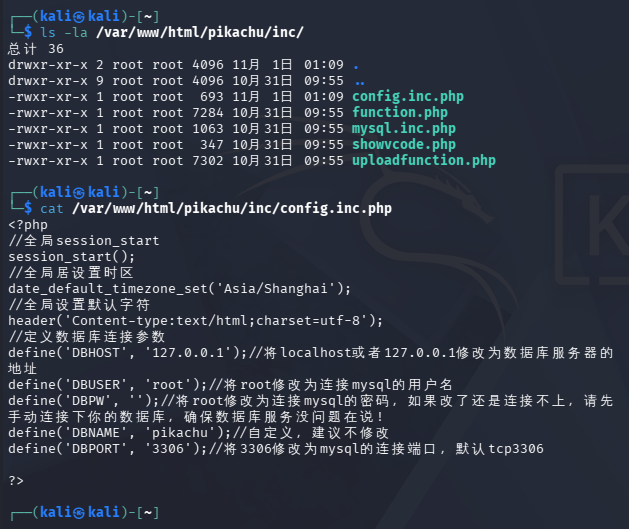
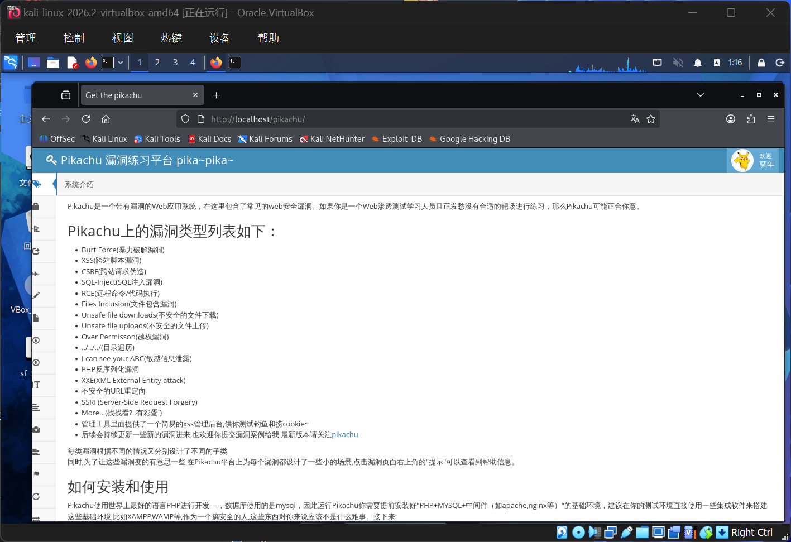
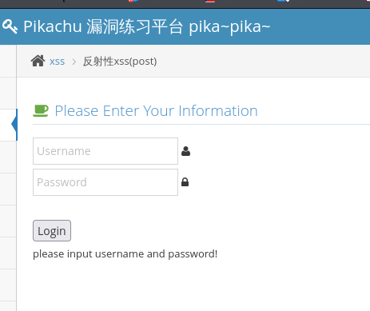
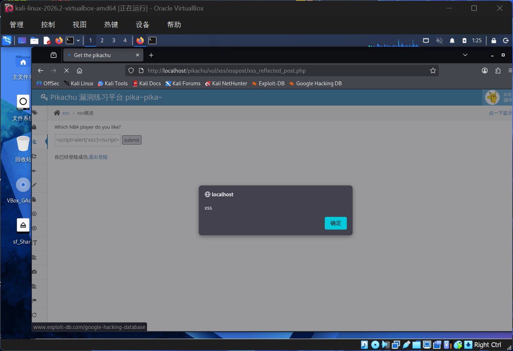

学 Web 安全，光看概念永远隔着一层——真正理解一个漏洞，最好的办法是在自己机器上把它打一遍。Pikachu 是一个开源的、故意写满漏洞的 PHP 网站练习平台，覆盖 XSS、SQL 注入、CSRF、文件上传等十几类漏洞，每一关都能在本机安全复现。本文记录我从零搭建 Pikachu 靶场、通关第一关（反射型 XSS），并深入源码搞清"它为什么有漏洞、该怎么修"的完整过程。
一、环境搭建（LAMP + Pikachu）
Pikachu 是 PHP 应用，需要网页服务器 + 数据库 + PHP 解释器三件套（统称 LAMP）。我在 Kali 上用一条命令装齐：
sudo apt install -y apache2 mariadb-server php php-mysqli git
sudo systemctl start apache2 mariadb
sudo systemctl enable apache2 mariadb装好后把源码克隆到 Apache 的网站根目录，再让 Apache 能展示它：
cd /var/www/html
sudo git clone https://github.com/zhuifengshaonianhanlu/pikachu.git踩坑一：数据库连不上（白屏）
访问 http://localhost/pikachu/install.php 点安装，结果白屏——PHP 跑到一半崩了。查配置源码后才发现两个真问题：
- MariaDB 的 root 默认走"本机套接字认证"，而 Pikachu 用 TCP 连接；
- 配置文件里数据库密码是空的，与事后设好的 root 密码对不上。

inc/config.inc.php 源码。注意 DBPW 默认是空字符串——这正是白屏白忙活的根因。两行命令修掉它（把 root 切成密码认证，并填上密码）：
sudo mysql -u root -ppikachu -e "ALTER USER 'root'@'localhost' IDENTIFIED BY 'pikachu'; FLUSH PRIVILEGES;"
sudo sed -i "s/define('DBPW', '');/define('DBPW', 'pikachu');/" /var/www/html/pikachu/inc/config.inc.php再回到 install.php 点「安装/初始化」，数据库顺利建好。打开首页，左边一整面漏洞菜单——靶场正式就绪：

二、首关通关：反射型 XSS（post）
从最常见的 XSS 开刀。左侧菜单 XSS → 反射型xss(post)，这一关需要先登录（用平台账号 pikachu / 000000），登录后才出现留言输入框：

在输入框里提交一段"带恶意"的内容：
<script>alert('xss')</script>点 submit——浏览器真的弹出了写着 xss 的对话框！这说明我输入的 <script> 没有被视为"数据"，而是被浏览器当成"要执行的代码"跑了：

三、进阶：读源码，漏洞到底从哪来
通关只是第一步。高阶要求是看懂源码：为什么这关有漏洞？这一关的源码在 vul/xss/xsspost/xss_reflected_post.php，处理输入的关键片段是：
if($_POST['message']=='kobe'){
$html.="<p class='notice'>愿你和{$_POST['message']}一样，永远年轻...</p>...";
}else{
$html.="<p class='notice'>who is {$_POST['message']},i don't care!</p>";
}
// ...
echo $html;漏洞成因
{$_POST['message']} 被直接字符串插值拼进了 HTML 模板，最后由 echo $html 原样吐给浏览器。全程没有任何转义——浏览器收到 <script>alert('xss')</script> 时，它分不清"这是用户写的内容"还是"这是我要执行的代码"，于是照单全收地执行了。一句话成因：服务端信任了用户输入，把它当 HTML 代码而非纯文本输出，于是浏览器执行了攻击者注入的脚本。
顺便记一个源码里无关的彩蛋 bug（提一句显专业）：文件第 14 行 $SELF_PAGE = "xss_reflected_get.php" 用的是赋值号 =，本意应是比较号 ==。不过那段只是用来高亮当前菜单，没有实际安全危害。
修复方案
修起来也只差一行——在所有用户输入回显前，用 htmlspecialchars() 把特殊字符转成 HTML 实体：
$msg = htmlspecialchars($_POST['message'], ENT_QUOTES, 'UTF-8');
$html.="<p class='notice'>who is {$msg},i don't care!</p>";htmlspecialchars(..., ENT_QUOTES) 会把 < > " ' 全部变成 < > 等安全的 HTML 实体。此时 <script> 只会作为纯文本显示出来，浏览器不再执行——这正是 Web 应用防范 XSS 的标准做法（输出编码 / 上下文相关的转义）。
| 环节 | 现象 | 根因 / 解法 |
|---|---|---|
| 安装白屏 | 点初始化无反应 | root 套接字认证 + 配置空密码；用 ALTER USER 改密码认证、DBPW 填密码解决 |
| 反射型 XSS | 输入 <script> 被浏览器执行 | 用户输入未转义直接拼 HTML；用 htmlspecialchars() 转义输出 |
四、小结与下一步
这一趟把"搭建—通关—读源码"串成了一条线：靶场搭起来不难，难点在于读懂它为什么不安全，以及用最小改动消除风险。Pikachu 左侧还有大量关卡没碰——SQL 注入（数字型能直接拖出用户表）、文件上传（拿 webshell）、CSRF、越权……每一关都可以照"通关截图 + 源码成因 + 修复方案"的套路写一节。后续我会陆续把它们补齐，本文先作为第一块基石。
真正的安全能力，不是记住多少漏洞名，而是看到一个输入框，就知道它背后有没有那一行"忘了转义"的代码。
关于授权与合规
本文所有操作均在本机授权的实验环境（Kali 虚拟机 + 本地 Pikachu 靶场）中完成，靶场源码为开源练习项目。所有截图均为本地真实操作记录，未对任何非授权目标发起测试，符合网络安全学习与实验的合规要求。
← 返回首页